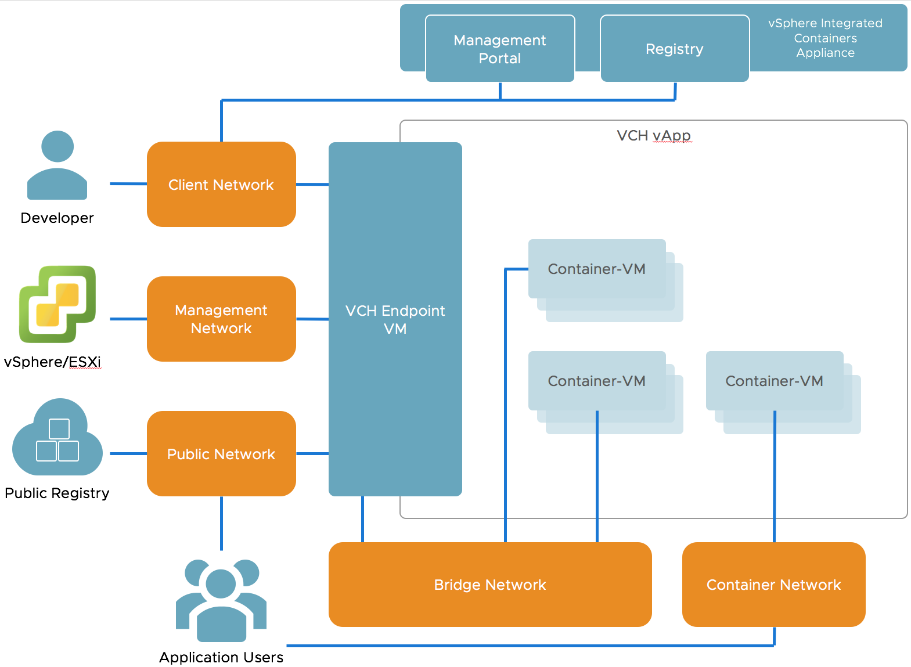

Virtual Container Host Networking
You can configure networks on a virtual container host (VCH) that are tied into the vSphere infrastructure. You define which networks are available to a VCH when you deploy the VCH.
Each network that a VCH uses is a port group on either a vCenter Server instance or ESXi host. You can deploy VCHs on NSX networks.
This topic provides an overview of the different network types that virtual container hosts use.
- High-Level View of VCH Networking
- Management Network
- Public Network
- Client Network
- Bridge Network
- Container Networks
High-Level View of VCH Networking
The image below shows a high-level view of the networks that a VCH uses and how they connect to your vSphere environment, to vSphere Integrated Containers Registry and Management Portal, and to the Docker environment.

The following sections describe each of the VCH network types.
IMPORTANT: A VCH supports a maximum of 3 distinct network interfaces. The bridge network requires its own port group, at least two of the public, client, and management networks must share a network interface and therefore a port group. Container networks do not go through the VCH, so they are not subject to this limitation. This limitation will be removed in a future release.
Management Network
The network for communication between the VCH, vCenter Server, and ESXi hosts. The VCH uses this network to provide the attach function of the Docker API.
IMPORTANT: Because the management network provides access to your vSphere environment, and because container VMs use this network to communicate with the VCH, always use a secure network for the management network. Ideally, use separate networks for the management network and the container networks. The most secure setup is to make sure that VCHs can access vCenter Server and ESXi hosts directly over the management network, and that the management network has route entries for the subnets that contain both the target vCenter Server and the corresponding ESXi hosts.
You define the management network by setting the --management-network option when you run vic-machine create. For more detailed information about management networks, see the section on the --management-network option in VCH Deployment Options.
Public Network
The network that container VMs use to connect to the internet. Ports that containers expose with docker create -p when connected to the default bridge network are made available on the public interface of the VCH endpoint VM via network address translation (NAT), so that containers can publish network services.
You define the public network by setting the --public-network option when you run vic-machine create. For more detailed information about management networks, see the section on the --public-network option in VCH Deployment Options.
Client Network
The network on which the VCH endpoint VM makes the Docker API available to Docker clients. The client network isolates the Docker endpoints from the public network. VCHs can access vSphere Integrated Containers Registry over the client network, but it is recommended to connect to registries either over the public network or over the management network. vSphere Integrated Containers Management Portal and vSphere Integrated Containers Registry require a connection to the client network.
You define the Docker management endpoint network by setting the --client-network option when you run vic-machine create. For more detailed information about Docker management endpoint networks, see the section on the --client-network option in VCH Deployment Options.
Bridge Network
The network or networks that container VMs use to communicate with each other. Each VCH requires a unique bridge network. The bridge network is a port group on a distributed virtual switch.
IMPORTANT: Do not use the bridge network for any other VM workloads, or as a bridge for more than one VCH.
You define the bridge networks by setting the --bridge-network option when you run vic-machine create. For more detailed information about bridge networks, see the section on the --bridge-network option in VCH Deployment Options.
Container application developers can also use docker network create to create additional bridge networks. These networks are represented by the User-Created Bridge Network in the image above. Additional bridge networks are created by IP address segregation and are not new port groups. You can define a range of IP addresses that additional bridge networks can use by defining the bridge-network-range option when you run vic-machine create. For more detailed information about how to set bridge network ranges, see the section on the --bridge-network-range option in VCH Deployment Options.
Container Networks
Container networks allow the vSphere administrator to make vSphere networks directly available to containers. This is done during deployment of a VCH by providing a mapping of the vSphere network name to an alias that is used inside the VCH endpoint VM. The mapped networks are then listed as available by the Docker API. Running docker network ls shows these networks, and container developers can attach them to containers in the normal way by using commands such as docker run or create, with the --network=_mapped-network-name_ or docker network connect. The containers connected to container networks are connected directly to these networks, and traffic does not route though the VCH endpoint VM using NAT.
You can share one network alias between multiple containers. For more detailed information about setting up container networks, see the sections on the container-network-xxx options in Virtual Container Host Deployment Options.